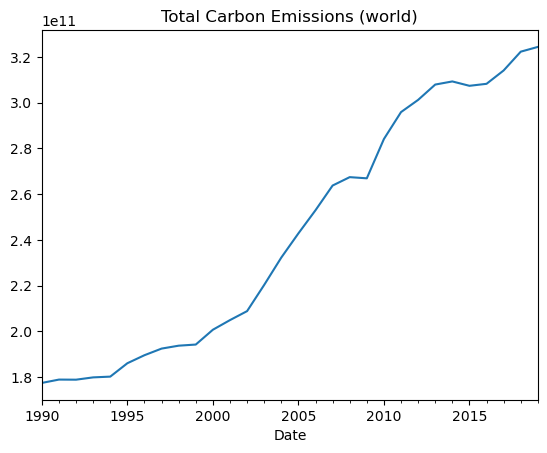
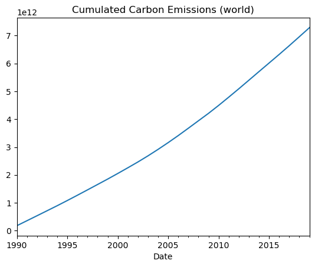

import pandas as pd
import numpy as np
import matplotlib.pyplot as pltCO2 Emissions and the Kusnetz curve
In this exercise, you must use data from the WorldBank to check whether CO2 Emissions can be explained by income per capita.
1. Data Work
Importing CO2 Data
Import the data from file /files/tutorials/session_9/data/API_EN.ATM.CO2E.PC_DS2_en_csv_v2_5177406.csv as a dataframe df_wide. (This table was downloaded from the worldbank website)
Hints: check the documentation from pandas.read_csv() to avoid the import error. You can check the first few lines of the file by typing in a cell: !/files/tutorials/session_9_wrap_up/data/API_EN.ATM.CO2E.PC_DS2_en_csv_v2_5177406.csv
Hint2: Check that all columns are well defined.
path_data='data/API_EN.ATM.CO2E.PC_DS2_en_csv_v2_5177406.csv'
df_wide = pd.read_csv(path_data, skiprows=4)df_wide| Country Name | Country Code | Indicator Name | Indicator Code | 1960 | 1961 | 1962 | 1963 | 1964 | 1965 | ... | 2013 | 2014 | 2015 | 2016 | 2017 | 2018 | 2019 | 2020 | 2021 | Unnamed: 66 | |
|---|---|---|---|---|---|---|---|---|---|---|---|---|---|---|---|---|---|---|---|---|---|
| 0 | Aruba | ABW | CO2 emissions (metric tons per capita) | EN.ATM.CO2E.PC | NaN | NaN | NaN | NaN | NaN | NaN | ... | NaN | NaN | NaN | NaN | NaN | NaN | NaN | NaN | NaN | NaN |
| 1 | Africa Eastern and Southern | AFE | CO2 emissions (metric tons per capita) | EN.ATM.CO2E.PC | NaN | NaN | NaN | NaN | NaN | NaN | ... | 0.995665 | 1.006938 | 0.956704 | 0.938565 | 0.928508 | 0.908094 | 0.903764 | NaN | NaN | NaN |
| 2 | Afghanistan | AFG | CO2 emissions (metric tons per capita) | EN.ATM.CO2E.PC | NaN | NaN | NaN | NaN | NaN | NaN | ... | 0.189910 | 0.149162 | 0.176278 | 0.153019 | 0.134106 | 0.165455 | 0.160976 | NaN | NaN | NaN |
| 3 | Africa Western and Central | AFW | CO2 emissions (metric tons per capita) | EN.ATM.CO2E.PC | NaN | NaN | NaN | NaN | NaN | NaN | ... | 0.499219 | 0.506918 | 0.485478 | 0.490807 | 0.474882 | 0.478305 | 0.485884 | NaN | NaN | NaN |
| 4 | Angola | AGO | CO2 emissions (metric tons per capita) | EN.ATM.CO2E.PC | NaN | NaN | NaN | NaN | NaN | NaN | ... | 1.031093 | 1.092216 | 1.125224 | 1.020760 | 0.802751 | 0.766143 | 0.779203 | NaN | NaN | NaN |
| ... | ... | ... | ... | ... | ... | ... | ... | ... | ... | ... | ... | ... | ... | ... | ... | ... | ... | ... | ... | ... | ... |
| 261 | Kosovo | XKX | CO2 emissions (metric tons per capita) | EN.ATM.CO2E.PC | NaN | NaN | NaN | NaN | NaN | NaN | ... | NaN | NaN | NaN | NaN | NaN | NaN | NaN | NaN | NaN | NaN |
| 262 | Yemen, Rep. | YEM | CO2 emissions (metric tons per capita) | EN.ATM.CO2E.PC | NaN | NaN | NaN | NaN | NaN | NaN | ... | 1.031352 | 0.988351 | 0.475163 | 0.370636 | 0.333285 | 0.315682 | 0.351859 | NaN | NaN | NaN |
| 263 | South Africa | ZAF | CO2 emissions (metric tons per capita) | EN.ATM.CO2E.PC | NaN | NaN | NaN | NaN | NaN | NaN | ... | 8.110093 | 8.184427 | 7.602659 | 7.534968 | 7.691396 | 7.575040 | 7.568640 | NaN | NaN | NaN |
| 264 | Zambia | ZMB | CO2 emissions (metric tons per capita) | EN.ATM.CO2E.PC | NaN | NaN | NaN | NaN | NaN | NaN | ... | 0.278307 | 0.298009 | 0.305264 | 0.317276 | 0.393686 | 0.433396 | 0.369958 | NaN | NaN | NaN |
| 265 | Zimbabwe | ZWE | CO2 emissions (metric tons per capita) | EN.ATM.CO2E.PC | NaN | NaN | NaN | NaN | NaN | NaN | ... | 0.905911 | 0.871840 | 0.878139 | 0.762487 | 0.700965 | 0.822472 | 0.765894 | NaN | NaN | NaN |
266 rows × 67 columns
Question 1: Describe briefly the data.
The data contains information on the level of carbon dioxide (CO2) emissions per capita (in metric tons) for different countries and regions over the years 1960 to 2019. The data is sourced from the World Bank’s World Development Indicators and is reported annually.
The dataset contains 264 rows (corresponding to different countries and regions) and 61 columns (corresponding to the years 1960 to 2019 and additional columns with country and region information). The data is in a wide format, with each row representing a country/region and each column representing a year.
The data is useful for analyzing trends in CO2 emissions over time and comparing emissions across countries and regions. It can also be used for exploring the relationship between CO2 emissions and various economic and environmental factors.
df_wide.describe()| 1960 | 1961 | 1962 | 1963 | 1964 | 1965 | 1966 | 1967 | 1968 | 1969 | ... | 2013 | 2014 | 2015 | 2016 | 2017 | 2018 | 2019 | 2020 | 2021 | Unnamed: 66 | |
|---|---|---|---|---|---|---|---|---|---|---|---|---|---|---|---|---|---|---|---|---|---|
| count | 0.0 | 0.0 | 0.0 | 0.0 | 0.0 | 0.0 | 0.0 | 0.0 | 0.0 | 0.0 | ... | 239.000000 | 239.000000 | 239.000000 | 239.000000 | 239.000000 | 239.000000 | 239.000000 | 0.0 | 0.0 | 0.0 |
| mean | NaN | NaN | NaN | NaN | NaN | NaN | NaN | NaN | NaN | NaN | ... | 4.288766 | 4.194242 | 4.141210 | 4.140690 | 4.148584 | 4.128191 | 4.086604 | NaN | NaN | NaN |
| std | NaN | NaN | NaN | NaN | NaN | NaN | NaN | NaN | NaN | NaN | ... | 5.002821 | 4.862196 | 4.731198 | 4.653372 | 4.585664 | 4.489473 | 4.474616 | NaN | NaN | NaN |
| min | NaN | NaN | NaN | NaN | NaN | NaN | NaN | NaN | NaN | NaN | ... | 0.024987 | 0.027090 | 0.037289 | 0.029718 | 0.033815 | 0.035826 | 0.035704 | NaN | NaN | NaN |
| 25% | NaN | NaN | NaN | NaN | NaN | NaN | NaN | NaN | NaN | NaN | ... | 0.720891 | 0.785259 | 0.771880 | 0.769068 | 0.802179 | 0.797275 | 0.790333 | NaN | NaN | NaN |
| 50% | NaN | NaN | NaN | NaN | NaN | NaN | NaN | NaN | NaN | NaN | ... | 2.726281 | 2.888558 | 2.827949 | 2.760181 | 2.699348 | 2.979403 | 2.981762 | NaN | NaN | NaN |
| 75% | NaN | NaN | NaN | NaN | NaN | NaN | NaN | NaN | NaN | NaN | ... | 6.264131 | 6.028664 | 5.792812 | 5.828931 | 6.021844 | 5.950694 | 5.890683 | NaN | NaN | NaN |
| max | NaN | NaN | NaN | NaN | NaN | NaN | NaN | NaN | NaN | NaN | ... | 37.420762 | 36.875726 | 35.111798 | 33.493040 | 32.281678 | 31.235406 | 32.761775 | NaN | NaN | NaN |
8 rows × 63 columns
# get rid of last column
df_wide = df_wide.iloc[:,:-1]
df_wide| Country Name | Country Code | Indicator Name | Indicator Code | 1960 | 1961 | 1962 | 1963 | 1964 | 1965 | ... | 2011 | 2012 | 2013 | 2014 | 2015 | 2016 | 2017 | 2018 | 2019 | 2020 | |
|---|---|---|---|---|---|---|---|---|---|---|---|---|---|---|---|---|---|---|---|---|---|
| 0 | Aruba | ABW | CO2 emissions (metric tons per capita) | EN.ATM.CO2E.PC | NaN | NaN | NaN | NaN | NaN | NaN | ... | NaN | NaN | NaN | NaN | NaN | NaN | NaN | NaN | NaN | NaN |
| 1 | Africa Eastern and Southern | AFE | CO2 emissions (metric tons per capita) | EN.ATM.CO2E.PC | NaN | NaN | NaN | NaN | NaN | NaN | ... | 0.970188 | 0.983547 | 0.995665 | 1.006938 | 0.956704 | 0.938565 | 0.928508 | 0.908094 | 0.903764 | NaN |
| 2 | Afghanistan | AFG | CO2 emissions (metric tons per capita) | EN.ATM.CO2E.PC | NaN | NaN | NaN | NaN | NaN | NaN | ... | 0.305308 | 0.265210 | 0.189910 | 0.149162 | 0.176278 | 0.153019 | 0.134106 | 0.165455 | 0.160976 | NaN |
| 3 | Africa Western and Central | AFW | CO2 emissions (metric tons per capita) | EN.ATM.CO2E.PC | NaN | NaN | NaN | NaN | NaN | NaN | ... | 0.468718 | 0.472242 | 0.499219 | 0.506918 | 0.485478 | 0.490807 | 0.474882 | 0.478305 | 0.485884 | NaN |
| 4 | Angola | AGO | CO2 emissions (metric tons per capita) | EN.ATM.CO2E.PC | NaN | NaN | NaN | NaN | NaN | NaN | ... | 0.983960 | 0.947663 | 1.031093 | 1.092216 | 1.125224 | 1.020760 | 0.802751 | 0.766143 | 0.779203 | NaN |
| ... | ... | ... | ... | ... | ... | ... | ... | ... | ... | ... | ... | ... | ... | ... | ... | ... | ... | ... | ... | ... | ... |
| 261 | Kosovo | XKX | CO2 emissions (metric tons per capita) | EN.ATM.CO2E.PC | NaN | NaN | NaN | NaN | NaN | NaN | ... | NaN | NaN | NaN | NaN | NaN | NaN | NaN | NaN | NaN | NaN |
| 262 | Yemen, Rep. | YEM | CO2 emissions (metric tons per capita) | EN.ATM.CO2E.PC | NaN | NaN | NaN | NaN | NaN | NaN | ... | 0.900862 | 0.801193 | 1.031352 | 0.988351 | 0.475163 | 0.370636 | 0.333285 | 0.315682 | 0.351859 | NaN |
| 263 | South Africa | ZAF | CO2 emissions (metric tons per capita) | EN.ATM.CO2E.PC | NaN | NaN | NaN | NaN | NaN | NaN | ... | 7.803853 | 8.030478 | 8.110093 | 8.184427 | 7.602659 | 7.534968 | 7.691396 | 7.575040 | 7.568640 | NaN |
| 264 | Zambia | ZMB | CO2 emissions (metric tons per capita) | EN.ATM.CO2E.PC | NaN | NaN | NaN | NaN | NaN | NaN | ... | 0.213798 | 0.273319 | 0.278307 | 0.298009 | 0.305264 | 0.317276 | 0.393686 | 0.433396 | 0.369958 | NaN |
| 265 | Zimbabwe | ZWE | CO2 emissions (metric tons per capita) | EN.ATM.CO2E.PC | NaN | NaN | NaN | NaN | NaN | NaN | ... | 0.875955 | 0.905368 | 0.905911 | 0.871840 | 0.878139 | 0.762487 | 0.700965 | 0.822472 | 0.765894 | NaN |
266 rows × 65 columns
The data contains yearly carbon emissions per capita, for all countries, starting in 1960 until 2021 (with some missing data)
Cleaning up CO2 Data
Question 2: convert the data into the long format using the function pandas.melt(). The columns of the new table df_long should be: ["Country Name","Country Code","Indicator Name","Indicator Code", "Date", "Emissions"]
df_long = pd.melt(df_wide,
id_vars=["Country Name","Country Code","Indicator Name","Indicator Code"],
var_name="Date",
value_name="Emissions"
)df_long.head()| Country Name | Country Code | Indicator Name | Indicator Code | Date | Emissions | |
|---|---|---|---|---|---|---|
| 7981 | Africa Eastern and Southern | AFE | CO2 emissions (metric tons per capita) | EN.ATM.CO2E.PC | 1990 | 0.982136 |
| 7982 | Afghanistan | AFG | CO2 emissions (metric tons per capita) | EN.ATM.CO2E.PC | 1990 | 0.222538 |
| 7983 | Africa Western and Central | AFW | CO2 emissions (metric tons per capita) | EN.ATM.CO2E.PC | 1990 | 0.473669 |
| 7984 | Angola | AGO | CO2 emissions (metric tons per capita) | EN.ATM.CO2E.PC | 1990 | 0.554586 |
| 7985 | Albania | ALB | CO2 emissions (metric tons per capita) | EN.ATM.CO2E.PC | 1990 | 1.819542 |
Question 3: Eliminate all rows for which no emission data is available
df_long = df_long.dropna()Question 4: Convert the Date column into a date format.
Hint: look for pandas.to_datetime() (This is not absolutely mandatory but makes graphs nicer)
df_long['Date']7981 1990
7982 1990
7983 1990
7984 1990
7985 1990
...
15954 2019
15956 2019
15957 2019
15958 2019
15959 2019
Name: Date, Length: 7147, dtype: objectdf_long['Date'] = pd.to_datetime(df_long['Date'])
df_long['Date']7981 1990-01-01
7982 1990-01-01
7983 1990-01-01
7984 1990-01-01
7985 1990-01-01
...
15954 2019-01-01
15956 2019-01-01
15957 2019-01-01
15958 2019-01-01
15959 2019-01-01
Name: Date, Length: 7147, dtype: datetime64[ns]Importing World Bank Data
From the world bank website, we download data for historical real gdp and population.
Checkout the wbdata library. Import time series for GDP and Total Population for all countries.
import wbdataindicators = {
"NY.GDP.MKTP.CD": "GDP",
"SP.POP.TOTL": "Total Population"
}
df_wb = wbdata.get_dataframe(indicators).reset_index()
df_wb| country | date | GDP | Total Population | |
|---|---|---|---|---|
| 0 | Africa Eastern and Southern | 2023 | NaN | NaN |
| 1 | Africa Eastern and Southern | 2022 | 1.185138e+12 | 720859132.0 |
| 2 | Africa Eastern and Southern | 2021 | 1.086531e+12 | 702977106.0 |
| 3 | Africa Eastern and Southern | 2020 | 9.288802e+11 | 685112979.0 |
| 4 | Africa Eastern and Southern | 2019 | 1.006191e+12 | 667242986.0 |
| ... | ... | ... | ... | ... |
| 17019 | Zimbabwe | 1964 | 1.217138e+09 | 4310332.0 |
| 17020 | Zimbabwe | 1963 | 1.159512e+09 | 4177931.0 |
| 17021 | Zimbabwe | 1962 | 1.117602e+09 | 4049778.0 |
| 17022 | Zimbabwe | 1961 | 1.096647e+09 | 3925952.0 |
| 17023 | Zimbabwe | 1960 | 1.052990e+09 | 3806310.0 |
17024 rows × 4 columns
Question 5: Change the format of column date to datetime.
df_wb['date'] = pd.to_datetime(df_wb['date'])
df_wb.head()| country | date | GDP | Total Population | |
|---|---|---|---|---|
| 0 | Africa Eastern and Southern | 2023-01-01 | NaN | NaN |
| 1 | Africa Eastern and Southern | 2022-01-01 | 1.185138e+12 | 720859132.0 |
| 2 | Africa Eastern and Southern | 2021-01-01 | 1.086531e+12 | 702977106.0 |
| 3 | Africa Eastern and Southern | 2020-01-01 | 9.288802e+11 | 685112979.0 |
| 4 | Africa Eastern and Southern | 2019-01-01 | 1.006191e+12 | 667242986.0 |
Question 6: Change columns of df_wb to [“Country Name”, “Date”, “GDP”, “Population”].
df_wb.columns = ["Country Name", "Date", "GDP", "Population"]df_wb.columnsIndex(['Country Name', 'Date', 'GDP', 'Population'], dtype='object')Merging CO2 and World Bank Data
Question 7: Merge the datafames df_wb and df_long into a single dataframe df_kuznetz.
We perform the same steps as in the first part for both series then merge the resulting long databases “on” the Country Code and Date columns.
You should obtain one single database data containing the columns ["Country Name","Country Code","Indicator Name","Indicator Code","Date", "Emissions", "GDP", "Population"]
df_kuznets = df_long.merge(df_wb, on=["Country Name","Date"])2. Data exploration
2.1 Graphical representation
Question 8: Compute total emissions for each country.
# Let' s compute total emissions (for each year):
df_kuznets["TEmissions"] = df_kuznets["Emissions"]*df_kuznets["Population"]df_kuznets.head()| Country Name | Country Code | Indicator Name | Indicator Code | Date | Emissions | GDP | Population | TEmissions | |
|---|---|---|---|---|---|---|---|---|---|
| 0 | Africa Eastern and Southern | AFE | CO2 emissions (metric tons per capita) | EN.ATM.CO2E.PC | 1990-01-01 | 0.982136 | 2.546735e+11 | 309890664.0 | 3.043549e+08 |
| 1 | Afghanistan | AFG | CO2 emissions (metric tons per capita) | EN.ATM.CO2E.PC | 1990-01-01 | 0.222538 | NaN | 10694796.0 | 2.380000e+06 |
| 2 | Africa Western and Central | AFW | CO2 emissions (metric tons per capita) | EN.ATM.CO2E.PC | 1990-01-01 | 0.473669 | 1.218036e+11 | 206739024.0 | 9.792580e+07 |
| 3 | Angola | AGO | CO2 emissions (metric tons per capita) | EN.ATM.CO2E.PC | 1990-01-01 | 0.554586 | 1.123628e+10 | 11828638.0 | 6.560000e+06 |
| 4 | Albania | ALB | CO2 emissions (metric tons per capita) | EN.ATM.CO2E.PC | 1990-01-01 | 1.819542 | 2.028554e+09 | 3286542.0 | 5.980000e+06 |
# solution 1: loop over each country
for country in df_kuznets['Country Name'].unique():
df_c = df_kuznets[df_kuznets['Country Name']==country]
te = df_c["TEmissions"].sum()
print(f"Total emissions for '{country}': {te}")Total emissions for 'Africa Eastern and Southern': 13404472170.208675
Total emissions for 'Afghanistan': 95460000.50544737
Total emissions for 'Africa Western and Central': 4638752133.020737
Total emissions for 'Angola': 553169997.2534183
Total emissions for 'Albania': 112550000.08583067
Total emissions for 'Andorra': 14629999.967813494
Total emissions for 'Arab World': 37093235321.97194
Total emissions for 'United Arab Emirates': 3725519996.948244
Total emissions for 'Argentina': 4374320037.231444
Total emissions for 'Armenia': 170760000.12397763
Total emissions for 'Antigua and Barbuda': 12969999.953508377
Total emissions for 'Australia': 10421789732.640446
Total emissions for 'Austria': 1971999996.7956543
Total emissions for 'Azerbaijan': 979830002.1362305
Total emissions for 'Burundi': 8450000.043511389
Total emissions for 'Belgium': 3206549994.5068383
Total emissions for 'Benin': 93380000.51498412
Total emissions for 'Burkina Faso': 53590000.25987626
Total emissions for 'Bangladesh': 1166459997.10083
Total emissions for 'Bulgaria': 1457500005.0354004
Total emissions for 'Bahrain': 627629998.3215332
Total emissions for 'Bahamas, The': 73319999.69482425
Total emissions for 'Bosnia and Herzegovina': 498559999.6948242
Total emissions for 'Belarus': 1852059995.4223633
Total emissions for 'Belize': 16319999.951124186
Total emissions for 'Bolivia': 398069999.73297113
Total emissions for 'Brazil': 10285349940.185558
Total emissions for 'Barbados': 42829999.6423721
Total emissions for 'Brunei Darussalam': 173419998.85559085
Total emissions for 'Bhutan': 12129999.851584433
Total emissions for 'Botswana': 131520000.4959107
Total emissions for 'Central African Republic': 5859999.993145463
Total emissions for 'Canada': 15436500048.82813
Total emissions for 'Central Europe and the Baltics': 22260059971.733093
Total emissions for 'Switzerland': 1290329992.3706055
Total emissions for 'Chile': 1781930004.8828123
Total emissions for 'China': 180722829257.81247
Total emissions for 'Cote d'Ivoire': 188249999.29428113
Total emissions for 'Cameroon': 188960001.33514407
Total emissions for 'Congo, Dem. Rep.': 74759999.85218048
Total emissions for 'Congo, Rep.': 128630000.61988828
Total emissions for 'Colombia': 1904849990.2343743
Total emissions for 'Comoros': 4220000.019073484
Total emissions for 'Cabo Verde': 10609999.954700474
Total emissions for 'Costa Rica': 183859999.52316266
Total emissions for 'Caribbean small states': 1034020002.796352
Total emissions for 'Cuba': 800550000.6103514
Total emissions for 'Cyprus': 208309999.80926514
Total emissions for 'Czechia': 3514870001.220703
Total emissions for 'Germany': 24367020053.710922
Total emissions for 'Djibouti': 11989999.972581863
Total emissions for 'Dominica': 4580000.049769873
Total emissions for 'Denmark': 1511560003.0517564
Total emissions for 'Dominican Republic': 544600000.3814697
Total emissions for 'Algeria': 3119610001.2207026
Total emissions for 'East Asia & Pacific (excluding high income)': 210861561722.85782
Total emissions for 'Early-demographic dividend': 145562461072.3832
Total emissions for 'East Asia & Pacific': 284535181803.9547
Total emissions for 'Europe & Central Asia (excluding high income)': 86155186226.18817
Total emissions for 'Europe & Central Asia': 200014743312.3924
Total emissions for 'Ecuador': 868449998.6267085
Total emissions for 'Egypt, Arab Rep.': 4778139994.506838
Total emissions for 'Euro area': 76501155164.6067
Total emissions for 'Spain': 8148009973.144532
Total emissions for 'Estonia': 539469997.7493286
Total emissions for 'Ethiopia': 201770000.4386903
Total emissions for 'European Union': 97925719867.62526
Total emissions for 'Fragile and conflict affected situations': 17546817743.23741
Total emissions for 'Finland': 1666099990.2343762
Total emissions for 'Fiji': 31849999.833107002
Total emissions for 'France': 10543269963.378906
Total emissions for 'Gabon': 166300000.20980832
Total emissions for 'United Kingdom': 14824209992.675781
Total emissions for 'Georgia': 261579998.69346607
Total emissions for 'Ghana': 272250000.05722034
Total emissions for 'Guinea': 58159999.77588653
Total emissions for 'Gambia, The': 10709999.989271168
Total emissions for 'Guinea-Bissau': 6550000.017881391
Total emissions for 'Equatorial Guinea': 156999998.83651733
Total emissions for 'Greece': 2522079996.948241
Total emissions for 'Grenada': 7829999.977350233
Total emissions for 'Guatemala': 318759997.9782105
Total emissions for 'Guyana': 52169999.84741211
Total emissions for 'High income': 381429144218.1322
Total emissions for 'Honduras': 200320001.18255627
Total emissions for 'Heavily indebted poor countries (HIPC)': 3573743664.391078
Total emissions for 'Croatia': 546570000.9918215
Total emissions for 'Haiti': 57419999.87602233
Total emissions for 'Hungary': 1587849992.6757812
Total emissions for 'IBRD only': 421106618483.8625
Total emissions for 'IDA & IBRD total': 441420268999.2764
Total emissions for 'IDA total': 18580350306.178776
Total emissions for 'IDA blend': 11192485878.57648
Total emissions for 'Indonesia': 10537130031.738277
Total emissions for 'IDA only': 7250607880.587167
Total emissions for 'India': 39882729992.67581
Total emissions for 'Ireland': 1160019997.2534175
Total emissions for 'Iran, Islamic Rep.': 12940629923.095703
Total emissions for 'Iraq': 3115859987.79297
Total emissions for 'Iceland': 61519999.81403353
Total emissions for 'Israel': 1735090004.8828127
Total emissions for 'Italy': 12092299953.613281
Total emissions for 'Jamaica': 265480001.6784669
Total emissions for 'Jordan': 555120000.3051757
Total emissions for 'Japan': 35076589707.03126
Total emissions for 'Kazakhstan': 5781750007.934571
Total emissions for 'Kenya': 312409999.38964856
Total emissions for 'Kyrgyz Republic': 250470001.62124643
Total emissions for 'Cambodia': 136179999.8855591
Total emissions for 'Kiribati': 1460000.002682209
Total emissions for 'St. Kitts and Nevis': 6769999.985694885
Total emissions for 'Korea, Rep.': 14407270002.441402
Total emissions for 'Kuwait': 1847130003.2043457
Total emissions for 'Latin America & Caribbean (excluding high income)': 33888466716.879837
Total emissions for 'Lao PDR': 120899998.85082251
Total emissions for 'Lebanon': 545699999.2752075
Total emissions for 'Liberia': 20639999.970197685
Total emissions for 'Libya': 1412920000.9155276
Total emissions for 'St. Lucia': 13999999.854564665
Total emissions for 'Latin America & Caribbean': 41457734332.9309
Total emissions for 'Least developed countries: UN classification': 5059057141.458361
Total emissions for 'Low income': 5012888259.405353
Total emissions for 'Liechtenstein': 6000000.012516974
Total emissions for 'Sri Lanka': 379898067.4122288
Total emissions for 'Lower middle income': 98016438244.47752
Total emissions for 'Low & middle income': 424716971152.3774
Total emissions for 'Lesotho': 14489999.991655348
Total emissions for 'Late-demographic dividend': 300556353021.18164
Total emissions for 'Lithuania': 421159999.65667725
Total emissions for 'Luxembourg': 301879997.253418
Total emissions for 'Latvia': 266580000.34332278
Total emissions for 'Morocco': 1292710004.2724612
Total emissions for 'Moldova': 312960001.56402576
Total emissions for 'Madagascar': 58730000.0
Total emissions for 'Maldives': 24459999.809265155
Total emissions for 'Middle East & North Africa': 51448783593.49841
Total emissions for 'Mexico': 12061159943.847656
Total emissions for 'Middle income': 421343696273.93274
Total emissions for 'North Macedonia': 261080000.95367432
Total emissions for 'Mali': 57979999.38964845
Total emissions for 'Malta': 69689999.53746796
Total emissions for 'Myanmar': 356640002.72750866
Total emissions for 'Middle East & North Africa (excluding high income)': 30549771751.404892
Total emissions for 'Montenegro': 58259999.651908875
Total emissions for 'Mongolia': 400310000.3051756
Total emissions for 'Mozambique': 83620000.10490419
Total emissions for 'Mauritania': 59070000.0667572
Total emissions for 'Mauritius': 84436126.501589
Total emissions for 'Malawi': 25650000.066757202
Total emissions for 'Malaysia': 4726920022.583006
Total emissions for 'North America': 173811979552.8526
Total emissions for 'Niger': 32690000.021457683
Total emissions for 'Nigeria': 2851099994.2016597
Total emissions for 'Nicaragua': 119380000.4196167
Total emissions for 'Netherlands': 4828429971.92383
Total emissions for 'Norway': 1087909998.4741213
Total emissions for 'Nepal': 136439998.78883356
Total emissions for 'Nauru': 2259999.990910291
Total emissions for 'New Zealand': 896769999.3133546
Total emissions for 'OECD members': 369789151172.5048
Total emissions for 'Oman': 1173599988.7847903
Total emissions for 'Other small states': 3905384609.417043
Total emissions for 'Pakistan': 3644140003.3569345
Total emissions for 'Panama': 213220000.43869013
Total emissions for 'Peru': 1082419998.550415
Total emissions for 'Philippines': 2406870005.798341
Total emissions for 'Papua New Guinea': 129339999.70436095
Total emissions for 'Poland': 9427509987.792973
Total emissions for 'Pre-demographic dividend': 9276277144.682013
Total emissions for 'Korea, Dem. People's Rep.': 2000129989.6240237
Total emissions for 'Portugal': 1588619999.0844727
Total emissions for 'Paraguay': 136610000.84877014
Total emissions for 'Pacific island small states': 70741718.58012676
Total emissions for 'Post-demographic dividend': 350760303482.3914
Total emissions for 'Qatar': 1398360010.3759763
Total emissions for 'Romania': 2911399988.0981445
Total emissions for 'Russian Federation': 50028669951.171906
Total emissions for 'Rwanda': 20270000.09536743
Total emissions for 'South Asia': 45343400845.31007
Total emissions for 'Saudi Arabia': 10411920042.72461
Total emissions for 'Sudan': 332709999.0272522
Total emissions for 'Senegal': 170990000.3242493
Total emissions for 'Singapore': 1201560001.3732905
Total emissions for 'Solomon Islands': 8430000.040531162
Total emissions for 'Sierra Leone': 16709999.892711634
Total emissions for 'El Salvador': 177360000.49591056
Total emissions for 'Somalia': 18379999.940395355
Total emissions for 'Serbia': 1451359998.1689453
Total emissions for 'Sub-Saharan Africa (excluding high income)': 18032804102.318497
Total emissions for 'South Sudan': 28209999.87840655
Total emissions for 'Sub-Saharan Africa': 18043772943.966446
Total emissions for 'Small states': 5011130172.532069
Total emissions for 'Sao Tome and Principe': 2439999.9956786614
Total emissions for 'Suriname': 58950000.26226043
Total emissions for 'Slovak Republic': 1143979996.3378909
Total emissions for 'Slovenia': 443170001.83105457
Total emissions for 'Sweden': 1479820005.645752
Total emissions for 'Eswatini': 20219999.961853024
Total emissions for 'Seychelles': 10969999.896287914
Total emissions for 'Syrian Arab Republic': 1275749998.168946
Total emissions for 'Chad': 28950000.39577481
Total emissions for 'East Asia & Pacific (IDA & IBRD countries)': 208866163833.433
Total emissions for 'Europe & Central Asia (IDA & IBRD countries)': 99031617869.10379
Total emissions for 'Togo': 48429999.98092651
Total emissions for 'Thailand': 5962840003.66211
Total emissions for 'Tajikistan': 127070000.65803534
Total emissions for 'Turkmenistan': 1524150001.8310547
Total emissions for 'Latin America & the Caribbean (IDA & IBRD countries)': 39929189946.39128
Total emissions for 'Middle East & North Africa (IDA & IBRD countries)': 30220799912.348984
Total emissions for 'Tonga': 3459999.9824166265
Total emissions for 'South Asia (IDA & IBRD)': 45343400845.31007
Total emissions for 'Sub-Saharan Africa (IDA & IBRD countries)': 18043772943.966446
Total emissions for 'Trinidad and Tobago': 471790001.86920196
Total emissions for 'Tunisia': 688229999.6185304
Total emissions for 'Turkiye': 7610738125.918941
Total emissions for 'Tuvalu': 299999.9959766866
Total emissions for 'Tanzania': 177129998.37875354
Total emissions for 'Uganda': 75739999.98092654
Total emissions for 'Ukraine': 9787780028.076176
Total emissions for 'Upper middle income': 345819862778.84344
Total emissions for 'Uruguay': 176480000.41961676
Total emissions for 'United States': 158317880683.59372
Total emissions for 'Uzbekistan': 3472670014.038089
Total emissions for 'St. Vincent and the Grenadines': 7010000.029802322
Total emissions for 'Venezuela, RB': 4126760028.0761766
Total emissions for 'Vanuatu': 3199999.978840349
Total emissions for 'World': 812874344727.8098
Total emissions for 'Samoa': 5420000.022053717
Total emissions for 'Yemen, Rep.': 484140003.2043458
Total emissions for 'South Africa': 10590620035.40039
Total emissions for 'Zambia': 94410000.32901764
Total emissions for 'Zimbabwe': 381210002.19345087
Total emissions for 'Namibia': 78659999.79972847
Total emissions for 'Eritrea': 18240000.00357628
Total emissions for 'Micronesia, Fed. Sts.': 3870000.0005960404
Total emissions for 'Marshall Islands': 3570000.0324845244
Total emissions for 'Palau': 6159999.950528143
Total emissions for 'Timor-Leste': 6330000.028014186# solution 2: use groupby
total_emissions_per_country = df_kuznets.groupby('Country Name')['TEmissions'].sum()
total_emissions_per_countryCountry Name
Afghanistan 9.546000e+07
Africa Eastern and Southern 1.340447e+10
Africa Western and Central 4.638752e+09
Albania 1.125500e+08
Algeria 3.119610e+09
...
Venezuela, RB 4.126760e+09
World 8.128743e+11
Yemen, Rep. 4.841400e+08
Zambia 9.441000e+07
Zimbabwe 3.812100e+08
Name: TEmissions, Length: 238, dtype: float64Question 9: Plot the evolution over time of total recorded carbon emissions (ommiting dates where no information is available).
Hint: use groupby()
total_emissions_per_year = df_kuznets.groupby('Date')['TEmissions'].sum()
total_emissions_per_year.head()Date
1990-01-01 1.774377e+11
1991-01-01 1.788978e+11
1992-01-01 1.788542e+11
1993-01-01 1.798608e+11
1994-01-01 1.801915e+11
Name: TEmissions, dtype: float64from matplotlib import pyplot as plt
total_emissions_per_year.plot()
plt.title("Total Carbon Emissions (world)")Text(0.5, 1.0, 'Total Carbon Emissions (world)')
# to get the cumulated emissions
total_emissions_per_year.cumsum().plot()
plt.title("Cumulated Carbon Emissions (world)")Text(0.5, 1.0, 'Cumulated Carbon Emissions (world)')
(optional) Question 10 : Propose some plots to visualize the contribution of the main contributors to yearly carbon emissions and to cumulative carbon emissions. You can get inspiration from ourworldindata.
We could use a pie Chart of Global Emissions by Top 10 Emitters. This plot would show us the percentage of global carbon emissions of the top 10 emitters, with each country’s contribution shown as a colored segment of a pie chart in order to provide the relative contributions of each country to global emissions. We could also use an area chart of cumulative emissions by top emitters: This plot shows the cumulative carbon emissions over time for the top emitters, with each country’s contribution shown as a colored area of a stacked area chart. This plot allows for easy comparison of the contributions of different countries to cumulative emissions.
2.2 Geo-analysis
from plotly import express as px2.2.1. Total emissions per country
Question 11 : Change the following piece of code so that it represents, total emission per country (over time).
# we need to replace emissions per capita by "total emissions" (`TEmissions`)emissions_per_country=df_kuznets[df_kuznets['TEmissions'].notnull()].groupby(["Country Name","Country Code"])['TEmissions'].sum().reset_index()
emissions_per_country| Country Name | Country Code | TEmissions | |
|---|---|---|---|
| 0 | Afghanistan | AFG | 9.546000e+07 |
| 1 | Africa Eastern and Southern | AFE | 1.340447e+10 |
| 2 | Africa Western and Central | AFW | 4.638752e+09 |
| 3 | Albania | ALB | 1.125500e+08 |
| 4 | Algeria | DZA | 3.119610e+09 |
| ... | ... | ... | ... |
| 233 | Venezuela, RB | VEN | 4.126760e+09 |
| 234 | World | WLD | 8.128743e+11 |
| 235 | Yemen, Rep. | YEM | 4.841400e+08 |
| 236 | Zambia | ZMB | 9.441000e+07 |
| 237 | Zimbabwe | ZWE | 3.812100e+08 |
238 rows × 3 columns
fig = px.choropleth(emissions_per_country,
locations="Country Code",
color="TEmissions", # lifeExp is a column of gapminder
hover_name="Country Name", # column to add to hover information
color_continuous_scale='YlOrRd',
title="Total Emissions per Country (1990-2019)")
fig.update_layout(width=900, height=500)
fig.show()Unable to display output for mime type(s): application/vnd.plotly.v1+json2.2.3 Emission evolution per country
The following plot represents the evolution of CO2 emission per capita for various countries.
#Difference between the first and the last date, per country
evol_per_country = df_long.groupby(['Country Name',"Country Code"])['Emissions'].agg(['first', 'last']).reset_index()
# CO2 emission evolution
evol_per_country['Evolution'] = evol_per_country['last'] - evol_per_country['first']df_long['Date'].min(),df_long['Date'].max(),(Timestamp('1990-01-01 00:00:00'), Timestamp('2019-01-01 00:00:00'))fig = px.choropleth(evol_per_country, locations="Country Code",
color="Evolution", # lifeExp is a column of gapminder
hover_name="Country Name", # column to add to hover information
color_continuous_scale='YlOrRd',
title="Increase of Emissions per Capita (1990-2019)"
)
fig.update_layout(width=900, height=500)
fig.show()Unable to display output for mime type(s): application/vnd.plotly.v1+jsonQuestion 12 : Adapt the preceding piece of code so that it represents, the evolution of total emission per country.
#Difference between the first and the last date, per country
evol_per_country_total = df_kuznets.groupby(['Country Name',"Country Code"])['TEmissions'].agg(['first', 'last']).reset_index()
# CO2 emission evolution
evol_per_country_total['Evolution'] = evol_per_country_total['last'] - evol_per_country_total['first']fig = px.choropleth(evol_per_country_total, locations="Country Code",
color="Evolution", # lifeExp is a column of gapminder
hover_name="Country Name", # column to add to hover information
color_continuous_scale='YlOrRd',
title="Increase in total Emissions (1990-2019)"
)
fig.update_layout(width=900, height=500)
fig.show()Unable to display output for mime type(s): application/vnd.plotly.v1+json3. The Kusnetz curve
We are now interested in the relation between carbon emission and economic development. To this purpose, we would like to run a simple regression
\[\frac{ \text{emissions}_{i t} }{ \text{population}_{i t} } = \alpha + \beta*\frac{ \text{gdp}_{i t}}{\text{population}_{i t}} + \text{other factors}_{i t}\]
where \(i\) is the country index and \(t\) the time index. In a first step we will simply assume that the total effect of all other factors is normally distributed.
We would then like to consider variants of this regression in order to test the environment Kuznets curve hypothesis.
Question 10: Briefly summarize the environmental Kuznets curve hypothesis
(hint: perform a small websearch. Try to identify your sources)
The Environmental Kuznets Curve hypothesis postulates an inverted-U-shaped relationship between different pollutants and per capita income, i.e., environmental pressure increases up to a certain level as income goes up; after that, it decreases. The environmental pollution increases at the beginning of economic growth. However, when it passes a certain level of income, the economic growth allows environmental remediation. from Environmental Kuznets Curve: The Evidence from BSEC Countries* - / EGE ACADEMIC REVIEW and “Environmental Kuznets Curve Hypothesis: A Survey” from Ecological Economics
Question 11: Regress per capita emissions on gdp per capita and comment.
from statsmodels.formula import api as smf
df_kuznets['GDP_per_capita']=df_kuznets['GDP']/1000/df_kuznets['Population']
#on divise le PIB par mille car c'est en million et la population est en milliersmodel=smf.ols(" Emissions ~ GDP_per_capita ", df_kuznetz)
res=model.fit()
res.summary()The estimated regresssion is emissions per capita = 2,45+ 0,1852 gdp per capita. Both the intercept and the coefficient are significant, indicating that higher GDP per capita is associated with higher per capita emissions, holding other factors constant. The R-squared of the model is relatively low at 0.334, suggesting that other factors not included in the model may also be important in explaining per capita emissions.
Question 12: Split the sample into the three quantiles, based on gdp/capita in the last period. Run the same regression in all three subsamples. Comment.
df_kuznets['Quantile']= pd.qcut(df_kuznets['GDP_per_capita'],q = 3, labels=['low', 'medium', 'high'])
model_low=smf.ols(" Emissions ~ GDP_per_capita ", df_kuznets[df_kuznets['Quantile'] == "low"])
res_low=model_low.fit()
res_low.summary()| Dep. Variable: | Emissions | R-squared: | 0.080 |
| Model: | OLS | Adj. R-squared: | 0.080 |
| Method: | Least Squares | F-statistic: | 200.1 |
| Date: | Sun, 07 Apr 2024 | Prob (F-statistic): | 1.27e-43 |
| Time: | 23:03:16 | Log-Likelihood: | -4015.4 |
| No. Observations: | 2303 | AIC: | 8035. |
| Df Residuals: | 2301 | BIC: | 8046. |
| Df Model: | 1 | ||
| Covariance Type: | nonrobust |
| coef | std err | t | P>|t| | [0.025 | 0.975] | |
| Intercept | 0.0768 | 0.064 | 1.205 | 0.228 | -0.048 | 0.202 |
| GDP_per_capita | 1.1274 | 0.080 | 14.145 | 0.000 | 0.971 | 1.284 |
| Omnibus: | 1826.266 | Durbin-Watson: | 1.594 |
| Prob(Omnibus): | 0.000 | Jarque-Bera (JB): | 34369.056 |
| Skew: | 3.736 | Prob(JB): | 0.00 |
| Kurtosis: | 20.388 | Cond. No. | 4.30 |
Notes:
[1] Standard Errors assume that the covariance matrix of the errors is correctly specified.
model_medium=smf.ols(" Emissions ~ GDP_per_capita ", df_kuznets[df_kuznets['Quantile'] == "medium"])
res_medium=model_medium.fit()
res_medium.summary()| Dep. Variable: | Emissions | R-squared: | 0.093 |
| Model: | OLS | Adj. R-squared: | 0.093 |
| Method: | Least Squares | F-statistic: | 236.0 |
| Date: | Sun, 07 Apr 2024 | Prob (F-statistic): | 8.79e-51 |
| Time: | 23:03:47 | Log-Likelihood: | -5186.0 |
| No. Observations: | 2299 | AIC: | 1.038e+04 |
| Df Residuals: | 2297 | BIC: | 1.039e+04 |
| Df Model: | 1 | ||
| Covariance Type: | nonrobust |
| coef | std err | t | P>|t| | [0.025 | 0.975] | |
| Intercept | 1.1684 | 0.124 | 9.443 | 0.000 | 0.926 | 1.411 |
| GDP_per_capita | 0.5272 | 0.034 | 15.364 | 0.000 | 0.460 | 0.594 |
| Omnibus: | 922.711 | Durbin-Watson: | 1.907 |
| Prob(Omnibus): | 0.000 | Jarque-Bera (JB): | 3721.972 |
| Skew: | 1.961 | Prob(JB): | 0.00 |
| Kurtosis: | 7.844 | Cond. No. | 9.87 |
Notes:
[1] Standard Errors assume that the covariance matrix of the errors is correctly specified.
model_high=smf.ols(" Emissions ~ GDP_per_capita ", df_kuznets[df_kuznets['Quantile'] == "high"])
res_high=model_high.fit()
res_high.summary()| Dep. Variable: | Emissions | R-squared: | 0.077 |
| Model: | OLS | Adj. R-squared: | 0.077 |
| Method: | Least Squares | F-statistic: | 192.4 |
| Date: | Sun, 07 Apr 2024 | Prob (F-statistic): | 4.44e-42 |
| Time: | 23:04:03 | Log-Likelihood: | -7386.5 |
| No. Observations: | 2302 | AIC: | 1.478e+04 |
| Df Residuals: | 2300 | BIC: | 1.479e+04 |
| Df Model: | 1 | ||
| Covariance Type: | nonrobust |
| coef | std err | t | P>|t| | [0.025 | 0.975] | |
| Intercept | 6.8578 | 0.194 | 35.438 | 0.000 | 6.478 | 7.237 |
| GDP_per_capita | 0.0824 | 0.006 | 13.872 | 0.000 | 0.071 | 0.094 |
| Omnibus: | 1125.974 | Durbin-Watson: | 1.959 |
| Prob(Omnibus): | 0.000 | Jarque-Bera (JB): | 7949.756 |
| Skew: | 2.210 | Prob(JB): | 0.00 |
| Kurtosis: | 10.958 | Cond. No. | 50.5 |
Notes:
[1] Standard Errors assume that the covariance matrix of the errors is correctly specified.
These three linear regressions show us that the higher the GDP per capita of countries, the higher the R-squared. This means that the model is more predictive for countries with a “high” GDP, the higher their GDP per capita, the higher their per capita emissions. This partly confirms the Kuznetz curve hypothesis
Question 13. Instead of splitting the sample, run a nonlinear regression:
\[\frac{ \text{emissions}_{i t} }{ \text{population}_{i t} } = \alpha + \beta_1*\frac{ \text{gdp}_{i t}}{\text{population}_{i t}} + \beta_2*\left( \frac{ \text{gdp}_{i t}}{\text{population}_{i t}} \right)^2 + \text{other factors}_{i t}\]
Justify why \(\beta_2<0\) can be interpreted as a proof of the environmental Kuznets hypothesis. Comment.
import numpy as np
nonlinear_regression=smf.ols('Emissions ~ GDP_per_capita + np.power(GDP_per_capita, 2)',df_kuznets)
res_nl=nonlinear_regression.fit()
res_nl.summary()| Dep. Variable: | Emissions | R-squared: | 0.465 |
| Model: | OLS | Adj. R-squared: | 0.465 |
| Method: | Least Squares | F-statistic: | 2997. |
| Date: | Sun, 07 Apr 2024 | Prob (F-statistic): | 0.00 |
| Time: | 23:04:36 | Log-Likelihood: | -19043. |
| No. Observations: | 6904 | AIC: | 3.809e+04 |
| Df Residuals: | 6901 | BIC: | 3.811e+04 |
| Df Model: | 2 | ||
| Covariance Type: | nonrobust |
| coef | std err | t | P>|t| | [0.025 | 0.975] | |
| Intercept | 1.5058 | 0.058 | 25.901 | 0.000 | 1.392 | 1.620 |
| GDP_per_capita | 0.3718 | 0.005 | 69.641 | 0.000 | 0.361 | 0.382 |
| np.power(GDP_per_capita, 2) | -0.0024 | 5.77e-05 | -41.234 | 0.000 | -0.002 | -0.002 |
| Omnibus: | 4635.223 | Durbin-Watson: | 1.906 |
| Prob(Omnibus): | 0.000 | Jarque-Bera (JB): | 102447.422 |
| Skew: | 2.899 | Prob(JB): | 0.00 |
| Kurtosis: | 20.959 | Cond. No. | 1.96e+03 |
Notes:
[1] Standard Errors assume that the covariance matrix of the errors is correctly specified.
[2] The condition number is large, 1.96e+03. This might indicate that there are
strong multicollinearity or other numerical problems.
The coefficient on the quadratic term, 𝛽2, is negative, standing at -0,0024, which support the hypothesis that the relationship between emissions and GDP per capita is U-shaped and consistent with the EKH.
(Bonus) Suggest a way to improve the regression.
this result alone does not provide conclusive proof of the EKH, as the coefficient is not statistically significant and as there may be other factors that influence the relationship between emissions and GDP per capita